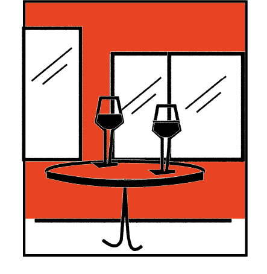
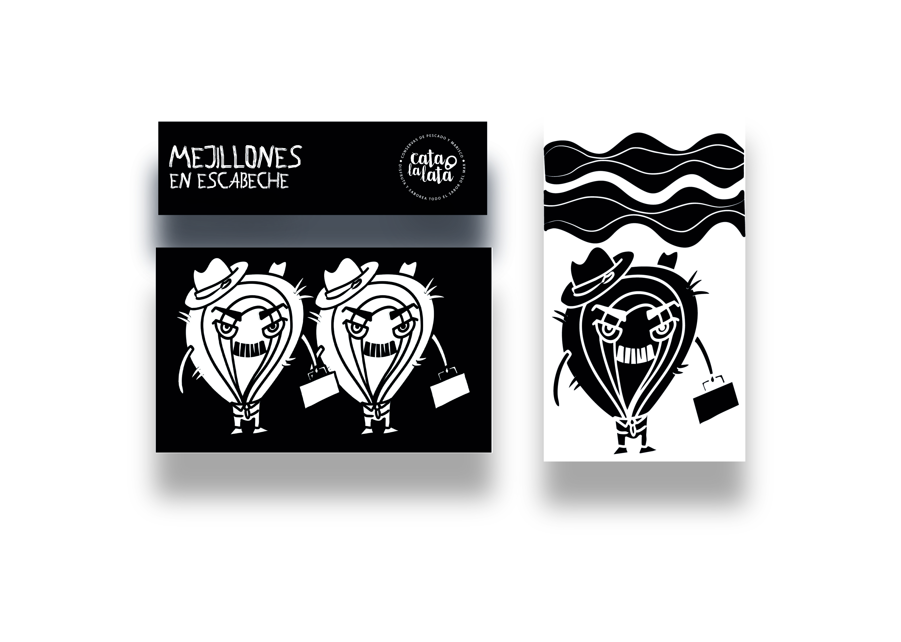

Inicio
Portfolio
Personal
Contacto
Inicio
Portfolio
Personal
Contacto
✕
1 / 1
Trabajo seleccionado
Portfolio
Todo
Diseño Editorial
Ilustración
Diseño 3D
Productos Editoriales
Editorial · 2024

Branding y etiquetado
Branding · 2023

Diseño de Packaging
Ilustración · 2026
Black Sheep · Iced Coffee
Modelado 3D · 2026